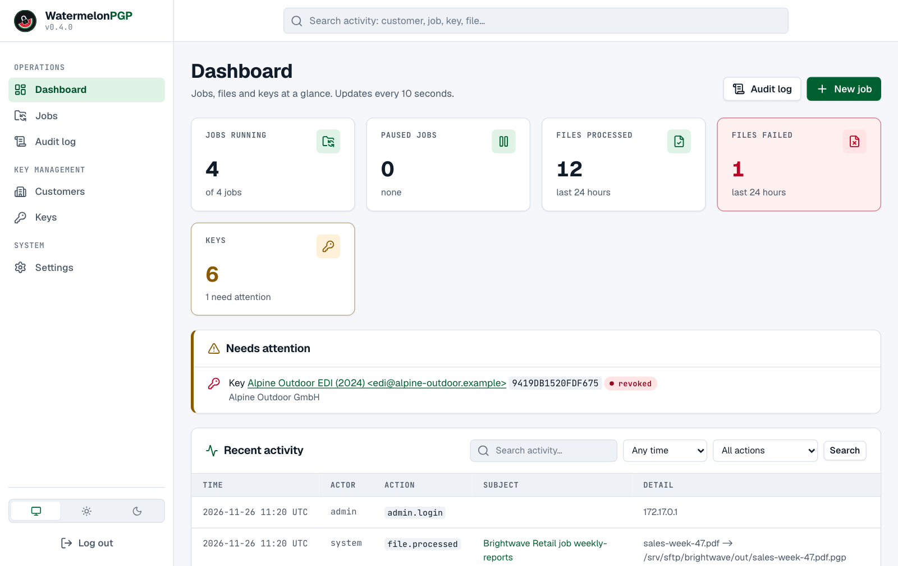
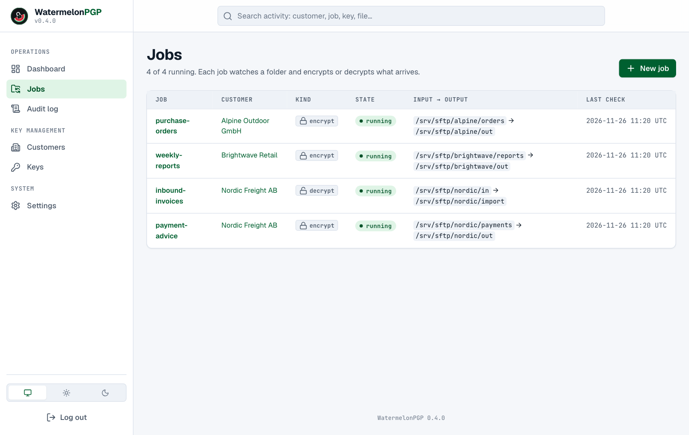
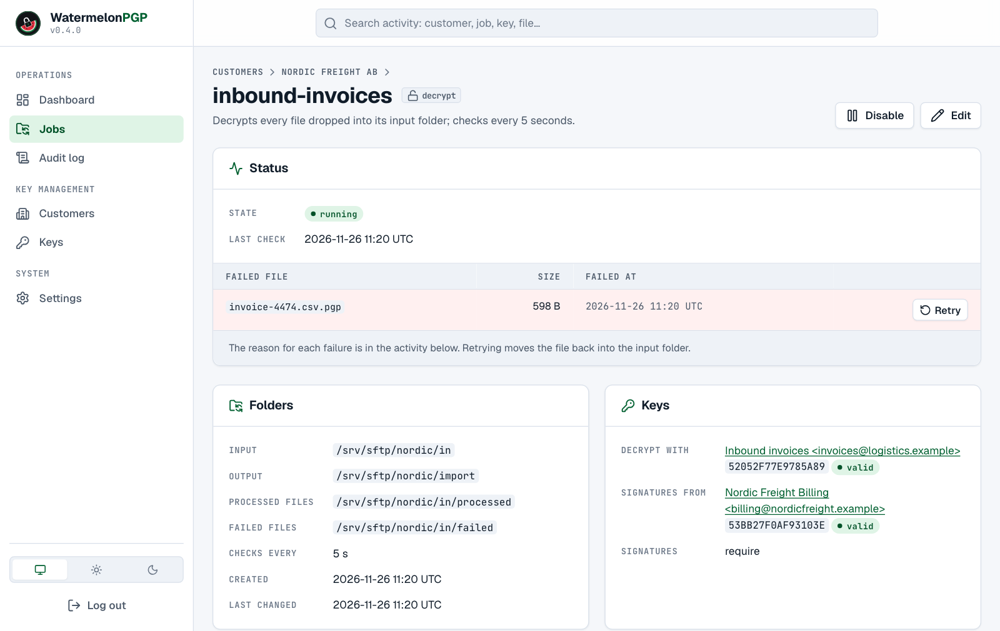
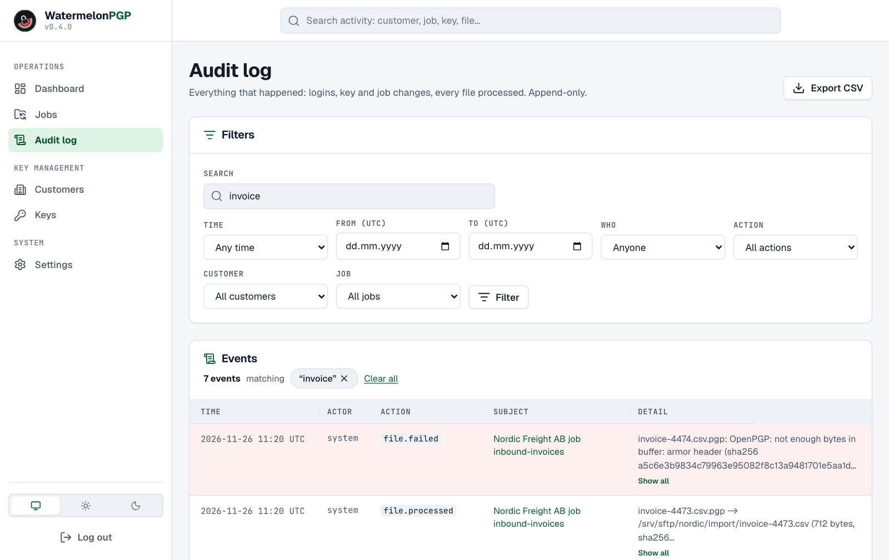
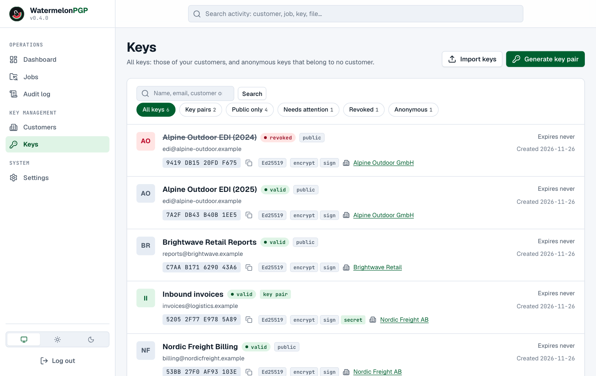
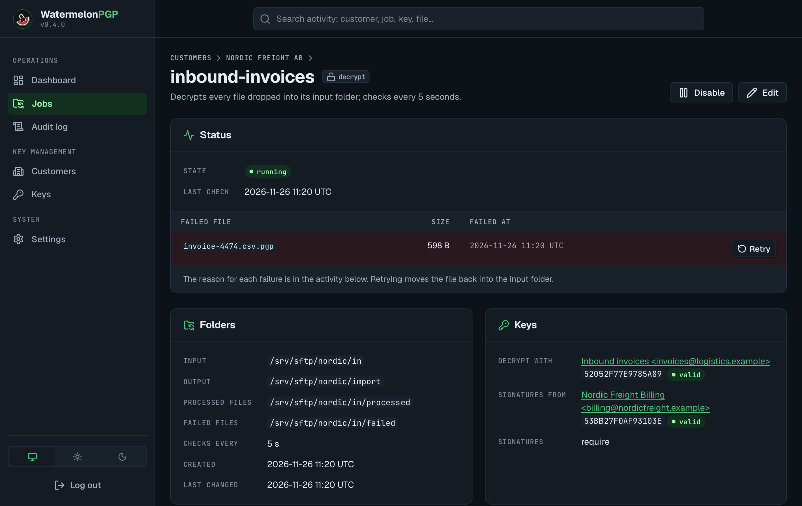

WatermelonPGP
OpenPGP for your file transfers, without the scripts
v0.4.0 · Windows installer · open sourceManage your customers' PGP keys and let folders encrypt and decrypt themselves: every CSV or PDF dropped for your SFTP transfers is processed automatically, safely and with a full audit trail. One self-hosted binary with a web UI.
brew install tarannum22/tap/watermelon-pgp
Why
Encrypted file exchange shouldn't depend on a pile of cron jobs
Customers send you their public keys, sometimes their own key pairs. Exports need encrypting before the SFTP job picks them up; incoming files need decrypting before anything can read them. Usually that's a tangle of shell scripts, gpg calls and keys nobody remembers the passphrase of. WatermelonPGP replaces it with one tool you can see into.
How it works
Watched folders that encrypt or decrypt everything dropped into them
A job connects an input folder to an output folder with the right keys. Your ERP, a report generator or a partner's upload writes a file; WatermelonPGP picks it up once it's complete and hands the result to your SFTP transfer.
sign with yours
Add the customer's keys
Import the public key they sent you, or generate a key pair for them. Ed25519 or RSA-4096, compatible with GnuPG 2.2 and later.
Create a job
Pick the input and output folders, the recipients, optionally a signing key. Decrypt jobs can require a valid signature from the sender.
Forget about it
Files are processed as they arrive, originals are archived, failures land in a failed/ folder with the reason, and everything is in the audit log.
Features
Everything for automated PGP file exchange, nothing to glue together
Built for the operator who runs the file transfers: clear about what happened, careful with the data, easy to run.
Keys per customer
Keys belong to a customer, so you always know whose they are. Keys of your own that serve several customers can stay anonymous.
- Generate Ed25519/Cv25519 or RSA-4096 keys
- Import public and secret keys, armored or binary
- Export public keys; export secret keys under a new passphrase
- Revoke keys; refresh a partner's key when they renew it
- Expired, expiring and revoked keys are flagged
Folder jobs
Encrypt outgoing files or decrypt incoming ones, continuously.
- Several recipients per file, optional signing
- Signature checks on incoming files: ignore, warn or require
- Binary or ASCII-armored output, custom extensions
- Originals archived or deleted; failed files kept aside with a retry button
Careful with every file
Designed so a transfer never sees half a file or a wrong one.
- Files are picked up only once they've stopped changing;
.partand temp files are ignored - Output appears atomically and never overwrites an existing file
- Tampered or unsigned input never produces output
- Multi-gigabyte files stream with constant memory
- On Windows, a file the SFTP server still has open for writing is left alone until it's released, and hidden or system files are skipped
Complete audit log
Every login, key change, export and processed file, append-only.
- Each file recorded with its SHA-256 and the keys used
- Filter by time, who, action, customer or job
- Full-text search over names, keys and details
- Export exactly what matches as CSV
Web UI and CLI
A clear dashboard for daily work, a full command line for scripting.
- Dashboard with running and paused jobs, failures and expiring keys
- Light and dark mode, following your system or your choice
- Works without JavaScript
- Everything also available on the command line (
watermelonpgp)
Easy to run
One binary, one SQLite file, no external services.
- Homebrew, Chocolatey, a Windows MSI installer, Docker image, or Linux, macOS and Windows Server binaries
- Hardened systemd unit, or a native Windows service
- Built-in HTTPS, or behind your reverse proxy
- JSON logs, health endpoint, online backups
A look inside
See what every job is doing
No more guessing whether last night's export went out.





Security
Built for data you can't afford to leak
WatermelonPGP holds private keys and decrypted customer data, so it is conservative by default and open about its design.
- Secret keys encrypted at restXChaCha20-Poly1305 under a master key kept outside the database. A stolen database alone reveals nothing.
- Secrets locked to their accountThe database and master key are private to the account that runs WatermelonPGP, and a backup to whoever made it: mode 0600 on Linux and macOS, access lists on Windows (where LocalSystem and Administrators keep access). A master key file others can read is refused.
- Private by defaultListens on localhost only until you configure HTTPS or a reverse proxy.
- Hardened web UIArgon2id password, strict session cookies, CSRF protection, login rate limiting, strict Content Security Policy.
- Interoperable and testedEvery change is tested against GnuPG 2.2 to 2.5 in both directions, on Linux, macOS and Windows Server.
- Memory-safe and auditableWritten in Rust on rPGP, an independently audited OpenPGP implementation. Open source under MIT or Apache-2.0.
Install
Up and running in two minutes
Pick whatever fits your servers. All of them give you the same single WatermelonPGP binary, run as watermelonpgp.
Homebrew
macOS (Apple silicon and Intel) and Linux.
brew install tarannum22/tap/watermelon-pgp # once: database, master key, admin password watermelonpgp --data-dir "$(brew --prefix)/var/watermelonpgp" init # run it in the background on http://127.0.0.1:8080 brew services start watermelon-pgp
Docker
Multi-arch image, runs as a non-root user.
docker run --rm -it -v wm:/data \ ghcr.io/tarannum22/watermelon-pgp init docker run -d -p 127.0.0.1:8080:8080 \ -v wm:/data ghcr.io/tarannum22/watermelon-pgp
Binaries
Linux (x86_64, arm64) and macOS (Apple silicon, Intel), with checksums.
# from the releases page:
tar xzf watermelon-pgp-v0.4.0-*.tar.gz
./watermelon-pgp-v0.4.0-*/watermelonpgp --helpWindows Server
Installed with Chocolatey, it runs as a native Windows service. In an elevated PowerShell:
choco install watermelon-pgp # then, in a new elevated PowerShell (for the updated Path): $env:WATERMELONPGP_DATA_DIR = "C:\ProgramData\WatermelonPGP" # once: database, master key, admin password watermelonpgp init # runs as NT SERVICE\watermelonpgp watermelonpgp service install --bind 127.0.0.1:8080 # let it use your job folders icacls D:\sftp /grant "NT SERVICE\watermelonpgp:(OI)(CI)M" Start-Service watermelonpgp
No Chocolatey on the server, or a new version not on Chocolatey yet (its review can take a few days)? Install the MSI instead (msiexec /i watermelon-pgp-v0.4.0-x86_64-pc-windows-msvc.msi /qn, which also suits Group Policy, Intune and SCCM) or unpack the zip (x86_64).
Quick start
Create the database, master key and admin password once, then start the web UI and the job engine.
watermelonpgp --data-dir ~/watermelonpgp init # prompts for the admin password watermelonpgp --data-dir ~/watermelonpgp serve # open http://127.0.0.1:8080
FAQ
Questions people ask
What is WatermelonPGP?
An open-source, self-hosted tool for automated PGP file exchange. It keeps your customers' OpenPGP keys in one place and runs jobs that encrypt or decrypt every file dropped into a folder, so your SFTP transfers only ever pick up finished, encrypted files. It's a single Rust binary with a web UI and an audit log.
How do I automatically PGP-encrypt files before an SFTP upload?
Import your customer's public key, then create an encrypt job: the input folder your system writes to, the output folder your SFTP transfer reads from, and the customer's key as recipient. Each new file is encrypted once it's completely written, published to the output folder, and the original is archived.
Can it decrypt incoming files from partners?
Yes. A decrypt job uses your secret key to decrypt everything that arrives in its input folder and can require a valid signature from the sender's key. Files that can't be decrypted or verified go to a failed/ folder with the reason.
Is it compatible with GnuPG?
Yes. Keys and files are standard OpenPGP, tested against GnuPG 2.2 to 2.5. You can import keys exported from gpg, and your partners can decrypt with gpg.
Where are the secret keys stored?
On your own server, in a local SQLite database, with secret keys encrypted under a master key. Nothing is sent to a cloud service.
Does it run on Windows Server?
Yes, since 0.3.0, as a native Windows service running under its own virtual account, NT SERVICE\watermelonpgp: choco install watermelon-pgp (or install the MSI, or unpack the zip), then watermelonpgp init, watermelonpgp service install and Start-Service watermelonpgp in an elevated PowerShell. Job folders can be local drives or UNC network shares that allow the server's computer account. The Windows Server section of the deployment guide has the details.
What does it cost, and where does it run?
It's free and open source under MIT or Apache-2.0. It runs on Linux, macOS and Windows Server. On Linux and macOS, install with Homebrew, run the Docker image, or download the binary; on Windows Server, install it with Chocolatey or the MSI, or unpack the zip, and run it as a native service.
Documentation